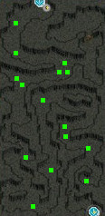
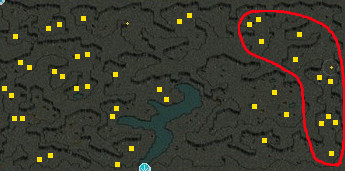
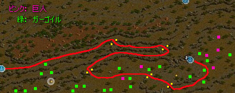
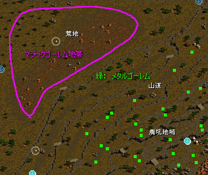
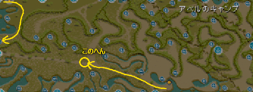

| 恩寵の種類 | クエスト名 | 受諾可能Lv | 共通恩寵効果 | 攻撃した時の 固有効果 （下段は強化時の効果） |
攻撃を受けた時の 固有効果 （下段は強化時の効果） |
備考 |
|---|---|---|---|---|---|---|
| 火の恩寵 | 燃え上がる火の情熱 | 1 | ダメ増加 ＋３０％ 移動速度 ＋１２５％ |
ダメ増加 ＋１０％ （発動率：１０％） |
火ダメ （発動率：５％） |
|
| ダメ増加 ＋２０％ （発動率：１０％） |
火ダメ （発動率：１０％） |
|||||
| 水の恩寵 | 揺れる水の瞑想 | 1 | ダメ増加 ＋３０％ 移動速度 ＋１２５％ |
敵の攻撃速度−２０％ 敵の移動速度−２０％ 持続時間 ５秒 （発動率：１０％） |
次の攻撃を完全無効化 （発動率：５％） |
完全無効化は説明上は持続時間5秒となっているが、 現状無制限の模様 |
| 敵の攻撃速度−４０％ 敵の移動速度−４０％ 持続時間 ５秒 （発動率：１０％） |
次の攻撃を完全無効化 （発動率：７％） |
|||||
| 風の恩寵 | 吹き抜ける風の叫び | 1 | ダメ増加 ＋３０％ 移動速度 ＋１２５％ |
スタン攻撃 ３０フレーム （発動率：１５％） |
ＨＰ回復 移動速度＋２２５％ （発動率：５％） |
移動速度UP+225％はヘイを上書きするので注意 |
| スタン攻撃 ５０フレーム （発動率：１５％） |
ＨＰ回復 移動速度＋２２５％ （発動率：７％） |
|||||
| 土の恩寵 | 鼓動する大地の意志 | 1 | ダメ増加 ＋３０％ 移動速度 ＋１２５％ |
敵の防御力−１０％ （発動率：１０％） |
ダメージ返し３０％ （発動率：１０％） |
防御力低下は、低下職のスキルを上書きする |
| 敵の防御力−２０％ （発動率：１０％） |
ダメージ返し５０％ （発動率：１０％） |
|||||
| 光の恩寵 | まぶしい光の信念 | 1 | ダメ増加 ＋３０％ 移動速度 ＋１２５％ |
スキル＋１ 持続時間 ５秒 （発動率：１０％） |
敵を感電 ５００秒 （発動率：５％） |
|
| スキル＋１ 持続時間 ５秒 （発動率：１５％） |
敵を感電 ５００秒 （発動率：７％） |
|||||
| 闇の恩寵 | 静かな闇の思索 | 1 | ダメ増加 ＋３０％ 移動速度 ＋１２５％ |
全体ＣＰの５％回復 （発動率：５％） |
全属性抵抗１５％上昇 （発動率：５％） |
|
| 全体ＣＰの５％回復 （発動率：１０％） |
全属性抵抗１５％上昇 （発動率：１０％） |
| NPC | クエ内容 | MAP/座標 | 備考 |
|---|---|---|---|
| 詩人ヘセルモニア | ロマ村ビスル （３０，２５） |
風の羽推奨。 直接ロマ村に飛ぶとよい。 または、 古都冒険家協会に入り、右上の奥にいる 恩寵商人ランターに話しかけると 詩人ヘセルモニアの所に直接飛ばしてくれる。 詩人ヘセルモニアは 町の真ん中にある炎の少し上（３０，２５）にいる。 ヘセルモニアに話しかけ、 ３）火の鳥「タオ」を信じて仕えます。 を選択し、クエを受諾。 なお、すでに別の恩寵を取っている場合は ヘセルモニアに話しかけ、 ２）恩寵をお返しします。 で恩寵を消してから受けなおすとよい。 |
|
| 思想家パイル | 試練の内容を聞く | エルベルク山脈／テレット・トンネル付近 （１１４，１２６） |
ミラーテレポータの前を記憶２推奨。 ミラーテレポータ（古都冒険者協会のロビーにいる） １１１４６ で、南フォーリンロード／テレット・トンネル出口付近に飛び、 そこから上へ進んで該当マップへ。 思想家パイルは マップに入って階段を登らずにそのまま右に進み、 南口のちょっと右下あたりにいる。 パイルの前を記憶１推奨。 この後テレットトンネルの中の方まで行ってから戻ってくる。 |
| サティロスの肩鎧１０個を手に入れる | テレット・トンネル南口 | 以前は途中に鍵付き扉が２つあって、 殴るか、鋼の扉鍵以上が必要だったが、 現在は最初から開いているようだ。 どこかのタイミングで変更された模様。 沸き場所は↓参照。 ドロップ率はほぼ１００％。 進みながら倒していけばUPするだろう。  |
|
| 火炎の燃え殻２０個を手に入れる | テレット・トンネル | 沸き場所は↓参照。 右側の赤丸で囲ったあたりで狩るとよいだろう。 ドロップはよい。  |
|
| 思想家パイル | エルベルク山脈／テレット・トンネル付近 （１１４，１２６） |
記憶１を使って。 | |
| 詩人ヘセルモニア | ロマ村ビスル （３０，２５） |
風の羽推奨。 直接ロマ村に飛ぶとよい。 |
|
| 太初の火に耐えると言われる バオバブの枝を手に入れる |
バヘル大河／東バヘル川 | 記憶２を使ってミラーテレポータに戻る。 ミラーテレポータ（古都冒険者協会のロビーにいる） １１１３３ で該当マップへ飛び、そこから下。 対象はバオバブの怪物（木のグラ）。 ミニマップ中「湿林帯」の付近にいる。 |
|
| 詩人ヘセルモニア | ロマ村ビスル （３０，２５） |
町戻りで。 |
| NPC | クエ内容 | MAP/座標 | 備考 |
|---|---|---|---|
| 詩人ヘセルモニア | ロマ村ビスル （３０，２５） |
風の羽推奨。 直接ロマ村に飛ぶとよい。 または、 古都冒険家協会に入り、右上の奥にいる 恩寵商人ランターに話しかけると 詩人ヘセルモニアの所に直接飛ばしてくれる。 詩人ヘセルモニアは 町の真ん中にある炎の少し上（３０，２５）にいる。 ヘセルモニアに話しかけ、 ４）水の竜「フルム」を信じて仕えます。 を選択し、クエを受諾。 なお、すでに別の恩寵を取っている場合は ヘセルモニアに話しかけ、 ２）恩寵をお返しします。 で恩寵を消してから受けなおすとよい。 |
|
| 静寂のエルリーン | 試練の内容を聞く | バヘル大河／北バヘル大河の交差地点 （７０，４１） |
風の羽推奨。 該当マップに飛ぶとよい。 風の羽を節約したい人は古都から走ろう。 エルリーンの前を記憶１推奨。 |
| 知識のメダル１０個を 手に入れる |
旧レッドアイ研究所Ｂ１ | 古都冒険家協会のロビーの上にある移動ポータルに入り、 冒険家協会バーへ。 入って左上にいるジョン・マルコに話しかける。 ジョン・マルコ（冒険家協会バーにいる） １１６２１ で直通。 レッドアイ信奉者（原始人）はピンクのみUPなので注意。 |
|
| 汚れた水の水晶２０個を 手に入れる |
|||
| 静寂のエルリーン | バヘル大河／北バヘル大河の交差地点 （７０，４１） |
記憶１を使って。 | |
| 詩人ヘセルモニア | ロマ村ビスル （３０，２５） |
風の羽推奨。 直接ロマ村に飛ぶとよい。 |
|
| 黄金の巨大亀を倒し 黄金のガラス瓶を手に入れる |
鉄の道／道の中間地点 | 風の羽推奨。 該当マップに飛ぶとよい。 対象MOBは緑カメ（黄金の巨大亀）。 マップ左端にある海岸沿いにいる。 |
|
| 詩人ヘセルモニア | ロマ村ビスル （３０，２５） |
町戻りで。 |
| NPC | クエ内容 | MAP/座標 | 備考 |
|---|---|---|---|
| 詩人ヘセルモニア | ロマ村ビスル （３０，２５） |
風の羽推奨。 直接ロマ村に飛ぶとよい。 または、 古都冒険家協会に入り、右上の奥にいる 恩寵商人ランターに話しかけると 詩人ヘセルモニアの所に直接飛ばしてくれる。 詩人ヘセルモニアは 町の真ん中にある炎の少し上（３０，２５）にいる。 ヘセルモニアに話しかけ、 ５）風の蛇「ソル」を信じて仕えます。 を選択し、クエを受諾。 なお、すでに別の恩寵を取っている場合は ヘセルモニアに話しかけ、 ２）恩寵をお返しします。 で恩寵を消してから受けなおすとよい。 |
|
| 疾風のルベル | 試練の内容を聞く | 西プラトン街道／グレートフォレスト入口 （１９５，１２４） |
ミラーテレポータ（古都冒険者協会のロビーにいる） １１１３１０ ←最後の数字は１ではなく１０なので注意！ 飛んだ所から右上方面。 ルベルの前を記憶１推奨。 |
| 巨人のガントレット１０個を 手に入れる |
エルベルク山脈／エルン山 | 風の羽推奨。 該当マップに飛ぶとよい。 風の羽を節約したい場合は ミラーテレポータ（古都冒険者協会のロビーにいる） １１１４６ で、南フォーリンロード／テレット・トンネル出口付近に飛び、 そこから↑→と進んで該当マップへ。 沸き場所は↓参照。  |
|
| 揺れる風の鏡２０個を 手に入れる |
|||
| 疾風のルベル | 西プラトン街道／グレートフォレスト入口 （１９５，１２４） |
記憶１を使って。 | |
| 詩人ヘセルモニア | ロマ村ビスル （３０，２５） |
風の羽推奨。 直接ロマ村に飛ぶとよい。 |
|
| ダークウィンドを倒し 風の砂時計を手に入れる |
ウェテンロード／デフヒルズ東部地域 （６９，１８０）付近 |
風の羽推奨。 該当マップに飛ぶとよい。 ビガ↑↑のマップ。 マップ中央左付近、「風の峡谷」あたりにいる。 |
|
| 詩人ヘセルモニア | ロマ村ビスル （３０，２５） |
町戻りで。 |
| NPC | クエ内容 | MAP/座標 | 備考 |
|---|---|---|---|
| 詩人ヘセルモニア | ロマ村ビスル （３０，２５） |
風の羽推奨。 直接ロマ村に飛ぶとよい。 または、 古都冒険家協会に入り、右上の奥にいる 恩寵商人ランターに話しかけると 詩人ヘセルモニアの所に直接飛ばしてくれる。 詩人ヘセルモニアは 町の真ん中にある炎の少し上（３０，２５）にいる。 ヘセルモニアに話しかけ、 ６）土地の獣「ナルン」を信じて仕えます。 を選択し、クエを受諾。 なお、すでに別の恩寵を取っている場合は ヘセルモニアに話しかけ、 ２）恩寵をお返しします。 で恩寵を消してから受けなおすとよい。 |
|
| 堅固のボレル | 試練の内容を聞く | 東プラトン街道／エルベルク山脈 峠 （１２９，６４） |
ミラーテレポータの前を記憶２推奨。 ミラーテレポータ（古都冒険者協会のロビーにいる） １１１６９ 飛んだ所のすぐそばにいる。 ボレルの前を記憶１推奨。 |
| メタルゴーレムのネックレス１０個を 手に入れる |
エルベルク山脈／ハノブ西部地域 | すぐ左上の移動ポータルを入って該当マップへ。 ハノブ←↑←マップのメタルゴーレムではないので注意。 沸き場所は↓参照。  |
|
| 崩れた岩のかけら２０個を 手に入れる |
|||
| 堅固のボレル | 東プラトン街道／エルベルク山脈 峠 （１２９，６４） |
記憶１を使って。 | |
| 詩人ヘセルモニア | ロマ村ビスル （３０，２５） |
風の羽推奨。 直接ロマ村に飛ぶとよい。 |
|
| 大地の破壊者を倒し 大地の宝石を手に入れる |
エルベルク山脈／エルベルク山脈西部地域 | 記憶２を使ってミラーテレポータに戻る。 ミラーテレポータ（古都冒険者協会のロビーにいる） １１１３４ 飛んだ所から左、「広い平原」周辺にいる。 ママンのグラ。 |
|
| 詩人ヘセルモニア | ロマ村ビスル （３０，２５） |
町戻りで。 |
| NPC | クエ内容 | MAP/座標 | 備考 |
|---|---|---|---|
| 詩人ヘセルモニア | ロマ村ビスル （３０，２５） |
風の羽推奨。 直接ロマ村に飛ぶとよい。 または、 古都冒険家協会に入り、右上の奥にいる 恩寵商人ランターに話しかけると 詩人ヘセルモニアの所に直接飛ばしてくれる。 詩人ヘセルモニアは 町の真ん中にある炎の少し上（３０，２５）にいる。 ロマ村は記憶が出来ないため、 町を出た所を記憶１推奨。 風の羽で行う場合は記憶しなくてよい。 ヘセルモニアに話しかけ、 １）最初の存在「アニマ」を信じて仕えます。 を選択し、クエを受諾。 なお、すでに別の恩寵を取っている場合は ヘセルモニアに話しかけ、 ２）恩寵をお返しします。 で恩寵を消してから受けなおすとよい。 |
|
| 実行者ベネリア | 試練の内容を聞く | クェレスプリング湖 （１７０，１９８） |
ミラーテレポータ（古都冒険者協会のロビーにいる） １１１５１０ ←最後の数字は１ではなく１０なので注意！ で、該当マップへ。 実行者ベネリアは、 飛んだ所から少し左下（１７０，１９８）にいる。 実行者ベネリアの前を記憶２推奨。 |
| 邪悪な清水２０個を 手に入れる |
クェレスプリング湖 | 対象ＭＯＢはリザードキリング。 マップ上何箇所かに固まっている。 ↑の方に湖下の通路への入口があるので、 そちらに移動しながら倒していこう。 次の湖下の通路は、マップ左隅に対象ＭＯＢが固まっているので、 左側の入口から入るとよい。 |
|
| 狼の爪１５個を 手に入れる |
湖下の通路 | 対象ＭＯＢは洞窟狼。 マップ左隅に固まっている。 |
|
| 実行者ベネリア | クェレスプリング湖 （１７０，１９８） |
記憶２を使って。 | |
| 詩人ヘセルモニア | ロマ村ビスル （３０，２５） |
記憶１または風の羽を使って。 | |
| 神秘の香炉を手に入れる | シーフギルドの倉庫［Ｂ］ Ｂ１ | ブリッジ町中の左上から シーフギルドの倉庫［Ｂ］に入り、１つ階を降りてＢ１へ。 １Ｆではないので注意しよう。 対象ＭＯＢはローグ。 ドロップはぼちぼち。 |
|
| 詩人ヘセルモニア | ロマ村ビスル （３０，２５） |
記憶１または風の羽を使って。 |
| NPC | クエ内容 | MAP/座標 | 備考 |
|---|---|---|---|
| 詩人ヘセルモニア | ロマ村ビスル （３０，２５） |
風の羽推奨。 直接ロマ村に飛ぶとよい。 または、 古都冒険家協会に入り、右上の奥にいる 恩寵商人ランターに話しかけると 詩人ヘセルモニアの所に直接飛ばしてくれる。 詩人ヘセルモニアは 町の真ん中にある炎の少し上（３０，２５）にいる。 ロマ村は記憶が出来ないため、 町を出た所を記憶１推奨。 風の羽で行う場合は記憶しなくてよい。 ヘセルモニアに話しかけ、 ２）最初の存在「アニムス」を信じて仕えます。 を選択し、クエを受諾。 なお、すでに別の恩寵を取っている場合は ヘセルモニアに話しかけ、 ２）恩寵をお返しします。 で恩寵を消してから受けなおすとよい。 |
|
| 悩めるロアドン | 試練の内容を聞く | グレートフォレスト／プラトン街道 （１７４，２４９） |
ファストポータル グレートフォレスト／プラトン街道 悩めるロアドンはマップ中央下付近（１７４，２４９）にいる。 マップに飛んでからの行き方は下参照。  悩めるロアドンの前を記憶２推奨。 |
| 奇妙な魂１５個を 手に入れる |
グレートフォレスト／プラトン街道 | 対象ＭＯＢはファントム。 中央の街道から上の方にいる。 |
|
| 熊の皮１０個を 手に入れる |
グレートフォレスト／プラトン街道 | 対象ＭＯＢはブラックベアー。 中央の街道から下の方にいる。 ワープしないと倒せない位置にいたりするので、 ロアドンの前を記憶して利用するとよいだろう。 |
|
| 悩めるロアドン | グレートフォレスト／プラトン街道 （１７４，２４９） |
記憶２を使って。 | |
| 詩人ヘセルモニア | ロマ村ビスル （３０，２５） |
記憶１または風の羽を使って。 | |
| 空虚の宝石を手に入れる | エルベルク山脈／エルン山 | 風の羽推奨。 該当マップに飛ぶとよい。 風の羽を使わない人は ミラーテレポータ（古都冒険者協会のロビーにいる） １１１４６ で、南フォーリンロード／テレット・トンネル出口付近に飛び、 そこから↑→と進むか、または ジョン・マルコ（冒険家協会バーにいる） １１４３１ で、テレット・トンネル北口に飛び、すぐ上の移動ポータルで外に出てそこから移動しても可。 対象ＭＯＢはドルイド。 マップ左下と、中央下付近にいる。 |
|
| 詩人ヘセルモニア | ロマ村ビスル （３０，２５） |
記憶１または風の羽を使って。 |
| NPC | クエ内容 | MAP/座標 | 備考 |
|---|---|---|---|
| 詩人ヘセルモニア | ロマ村ビスル （３０，２５） |
風の羽推奨。 直接ロマ村に飛ぶとよい。 または、 古都冒険家協会に入り、右上の奥にいる 恩寵商人ランターに話しかけると 詩人ヘセルモニアの所に直接飛ばしてくれる。 詩人ヘセルモニアは 町の真ん中にある炎の少し上（３０，２５）にいる。 |
|
| 古代の魔石の欠片３０個を 手に入れる |
本体Ｌｖ−５０以上のＭＯＢをたくさん倒し、 古代の魔石の欠片３０個を手に入れる。 ドロップは悪く、かなり時間がかかる。 |
||
| 詩人ヘセルモニア | ロマ村ビスル （３０，２５） |
クエ品を集めて話しかけると、 以下の材料を持って来いと言われる。 ・ペパーミントフラワーの硝子ビン ８個 ・神秘石 ８個 ・結晶石 ３個 ・炎の石 ２個 ・出土品 １０個 ・黒き炎の欠片 ３０個 |
|
| 詩人ヘセルモニア | ロマ村ビスル （３０，２５） |
材料をそろえて、もう一度話しかけると完了。 |